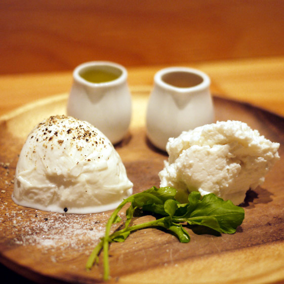
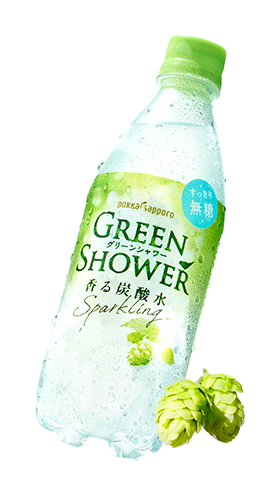
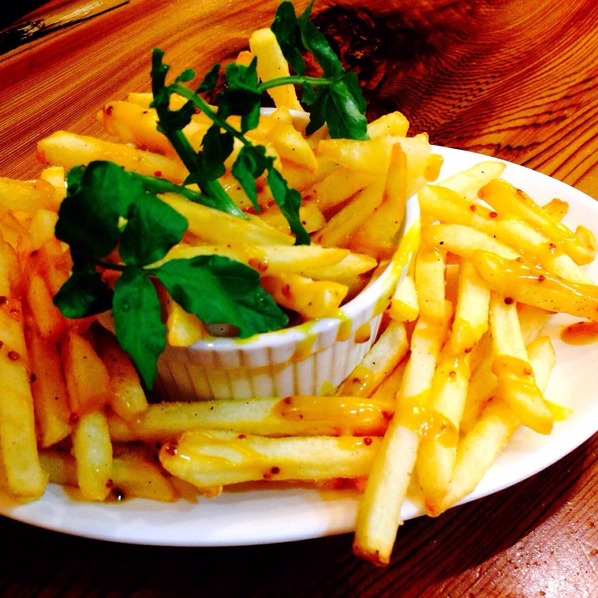
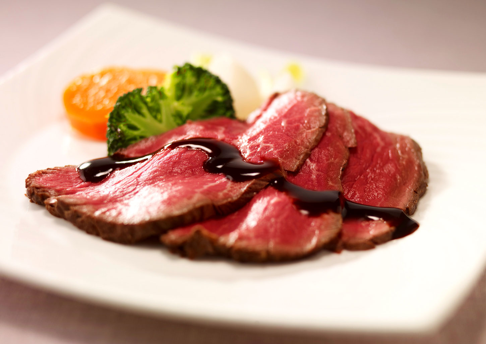
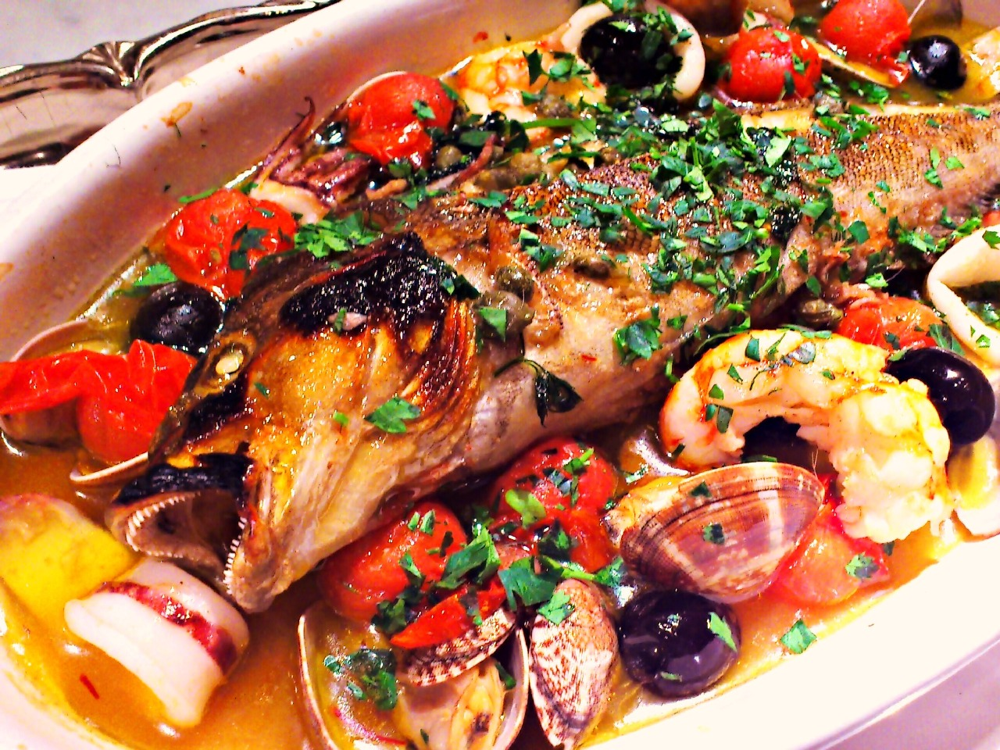
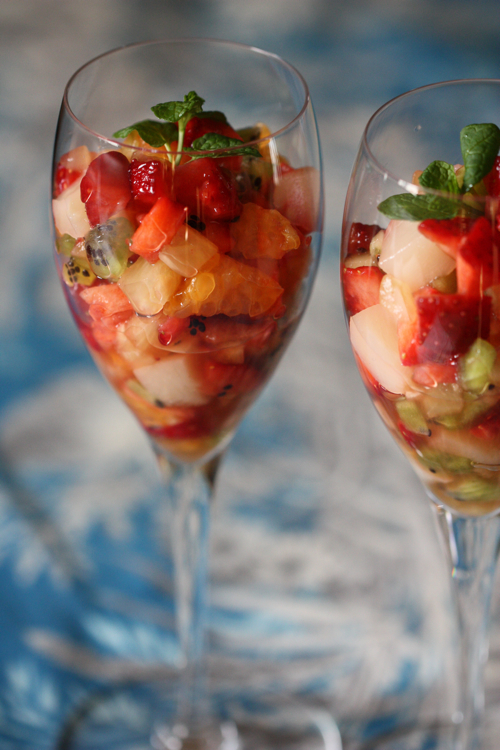

about CHEESE
 チーズとGREEN SHOWERはぴったりです！
ちょっとお洒落なランチにも、夜のおつまみにもなるチーズ
ワインにもよく合いますが、西洋料理は炭酸水と相性がよいので、やむをえずノンアルの時でも、何か飲んだって気分を味わえますよ～
greenshower with SALAD

画像の縦横比に修正が必要 ここに説明がはいるかもしれないここに説明がはいるかもしれないここに説明がはいるかもしれないここに説明がはいるかもしれないここに説明がはいるかもしれない
揚げ物について
ここに説明がはいるかもしれないここに説明がはいるかもしれないここに説明がはいるかもしれないここに説明がはいるかもしれないここに説明がはいるかもしれない
肉料理について
画像の縦横比に修正が必要 ここに説明がはいるかもしれないここに説明がはいるかもしれないここに説明がはいるかもしれないここに説明がはいるかもしれないここに説明がはいるかもしれない
魚料理について
画像の縦横比に修正が必要 ここに説明がはいるかもしれないここに説明がはいるかもしれないここに説明がはいるかもしれないここに説明がはいるかもしれないここに説明がはいるかもしれない
マチェドニアについて
画像の縦横比に修正が必要 ここに説明がはいるかもしれないここに説明がはいるかもしれないここに説明がはいるかもしれないここに説明がはいるかもしれないここに説明がはいるかもしれない